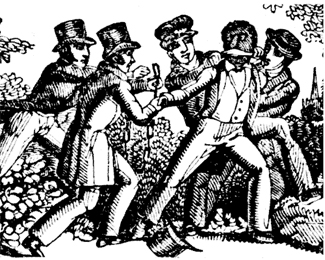

|
Article IV, Section II of the Constitution states that "No Person held to
Service or Labour in one State, under the Laws thereof, escaping into another,
shall, in Consequence of any Law or Regulation therein, be discharged from such
Service or Labour, but shall be delivered up on Claim of the Party to whom such
Service or Labour may be due." This brief clause, the foundation of the United
States's fugitive slave laws, was a necessary compromise in order for Southern
states to vote to ratify the Constitution, was a source of much controversy in
the early years of the republic. Many Northerners objected to the institution of
slavery on moral or economic grounds, and they resented being forced to return
runaways. Beyond that, the clause created a tenuous situation for free blacks,
who could be arrested if they could not prove their free status, or kidnapped
even if they could.
|

This 1839 engraving depicts the capture of a runaway slave.
|
The conflicting agendas of North and South led to a volley of legal maneuvers
on both sides in the years after the adoption of the Constitution. In 1793, the
federal government passed the first Fugitive Slave Law. The law established a
formal procedure by which suspected fugitive slaves could be claimed by slave
owners, and imposed a $500 fine on any individual who interfered with the return
of a slave. In response, many Northern states passed personal liberty laws,
which strove to protect free blacks and as many escaped slaves as possible, from
being captured. The federal government struck back with a series of court
decisions, most notably Prigg v. Pennsylvania (1842), which declared
personal liberty laws unconstitutional. The states, in turn, simply ordered
their officials to take no steps to enforce the 1793 law.
During this half-century plus of legal wrangling, the practical reality was
that runaways had very little chance of being recaptured once they reached the
North. There were only a small band of federal judges and marshals over the vast
area who were enforcing the law. Beyond that, runaways could usually find
refuge in the house of a sympathetic Northerner. While some individual
Northerners worked alone, often groups of Northern residents worked together to
help slaves escape, as was the case with the famous Underground Railroad,
sometimes individual Northerners worked alone. Given Northern resistance to the
1793 Fugitive Slave Act, Southern slave owners became increasingly vocal in
demands for a new law in the 1840s. Indeed, a new fugitive slave law became the
primary issue on the agenda of the Southern caucus in Congress. After numerous
failed attempts, they finally achieved their goal with the passage of a series
of bills that together are known as the Compromise of 1850.
The Fugitive Slave Law of 1850 was much harsher than its predecessor. It
increased the fine for interference on behalf of a runaway slave to $1,000, and
provided for the appointment of federal commissioners whose sole responsibility
was capturing runaways and hearing fugitive slave cases. The most shocking
aspect of the 1850 Fugitive Slave Law, from the Northern perspective, was the
procedure it established for determining whether accused runaways were indeed
slaves. No jury trials were allowed, and the accused could not speak on his or
her own behalf. Only minimal evidence was required to prove that the accused was
a runaway. Particularly controversial was the provision of the law stating that
a commissioner who found on behalf of a slave owner was paid $10, if he
found on behalf of the accused his fee was only $5. This was presumably
to compensate the commissioner for the extra time he needed to fill out the
forms necessary for a slave to be returned. Many critics, however, claimed this
was meant to reward commissioners for returning as many "runaways" as possible.

This poster protests the capture of runaway slave Anthony
Burns. Burns' case became a focal point for tensions over the Fugitive Slave Act
of 1850.
|
The 1850 Fugitive Slave Law provoked outrage across the North. In Boston,
Massachusetts, Daniel Webster was burned in effigy for having supported the
Compromise of 1850. In Syracuse, New York, a mob descended upon the town jail
and rescued a slave held in custody. Similar rescues occurred in Pennsylvania,
Ohio, and Massachusetts. In each case, the perpetrators were only nominally, if
at all, penalized for their actions. Even in cases where the federal government
managed to return a slave, Northern protesters were often able to complicate
matters. In 1854, for example, it cost the federal government $100,000 and
required an entire infantry company to transport captured slave Anthony Burns
through a Boston mob that numbered more than 50,000 people.
In the end, the Fugitive Slave Law of 1850 did very little to help slave
owners recapture their slaves. It would not be accurate, however, to say that
the law had no effect. The resentment the bill created provoked a wave of
anti-slavery sentiment across the North. Some Northerners who had once defended
the institution of slavery began to attack it, others who has already opposed it
became much firmer about their convictions. Preeminent among them was Harriet
Beecher Stowe, for whom the Fugitive Slave Act of 1850 provided the push to
begin work on Uncle Tom's Cabin. Eventually, widespread anti-slavery
sentiment gave rise to the Republican Party, the Civil War, and ultimately the
abolition of slavery in the United States.
Source: Christopher Bates for the History 139A website
|